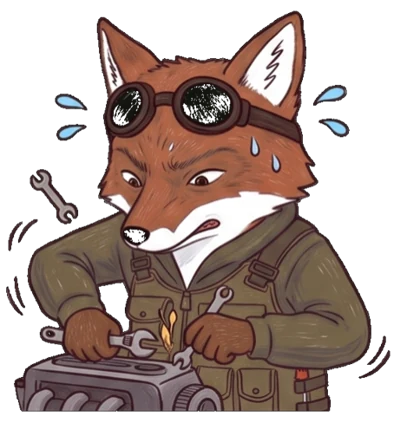

KUDING-RCSUB
Amicro:bitB
庫丁狐的潛艇要下深海尋寶。每一堂學一個藍牙本領：第五堂手機傳指令、第六堂傳傾斜給電腦、第七堂把位置和距離回報給電腦、第八堂兩個螢幕互相對話。電腦遊戲請用 Chrome 或 Edge（iPad 用 Bluefy），沒有 micro:bit 也能先用方向鍵試玩。
10×10 的大海底只畫在電腦上，雷達只在 micro:bit：LED 長條越滿、蜂鳴器嗶得越快，寶藏就越近。小心慢慢游的鯊魚，黑暗中只看得到紅眼睛。
傾斜 micro:bit 駕駛潛艇，水裡很重、轉向很慢。駕駛訓練收集珍珠；雙屏尋寶和 micro:bit 的雷達合作，在黑暗海底找寶藏。
悟空擴充板加上伺服馬達，從按鈕控制、超音波自動夾取，到用手機遙控手臂，最後裝上底盤變成吊車。手機用 Chrome（iPhone、iPad 用 Bluefy）。
打開 MakeCode，照簡報拼積木。用藍牙的單元要加入 bluetooth 擴展，專案設定選「不需配對」。
用 USB 線把程式傳進 micro:bit，看到打勾圖示就可以準備連線。
回到這裡打開這一堂的網頁，按「連接」選自己的 BBC micro:bit，就能開始闖關。

連不上、按了沒反應、畫面對不上？照著清單一項一項檢查，大部分問題都能自己修好。
stop#，程式要加一個「如果 指令 = "stop"」讓馬達或伺服馬達停下來。